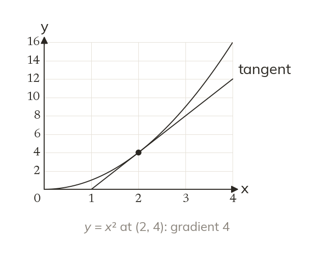

The tangent borrows the curve's gradient
The tangent's gradient is dydx at the point. The tangent also passes through the point.
The tangent at a point has the same gradient as the curve there, found from dydx. It also passes through the point itself.